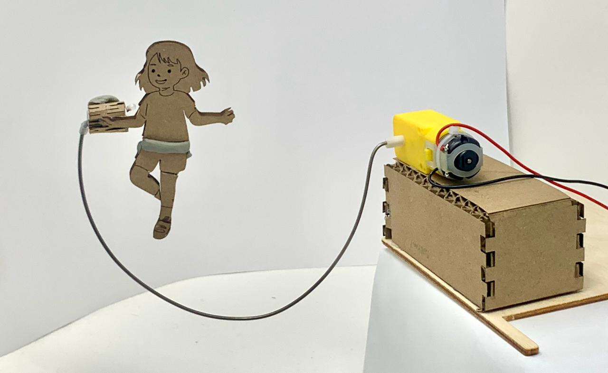
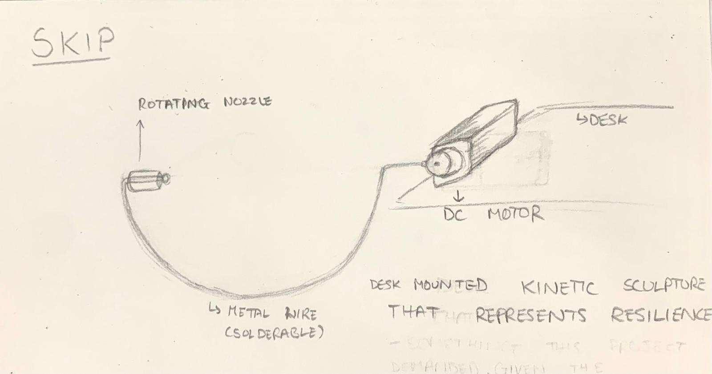
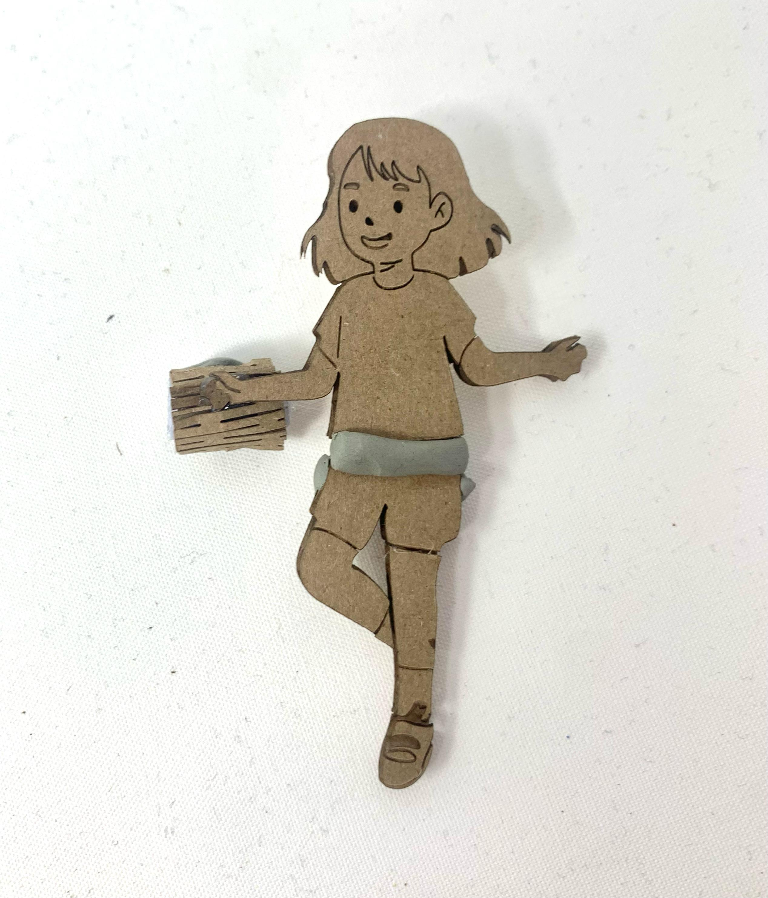
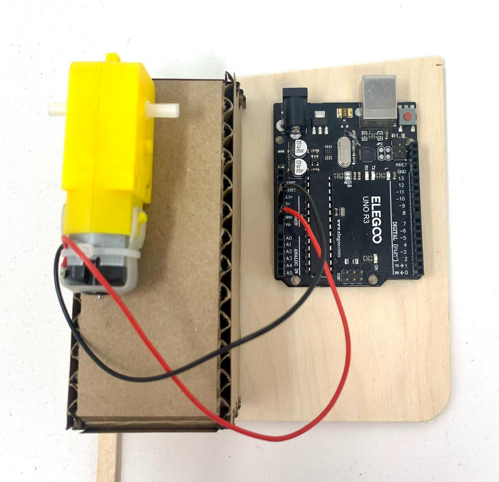

Skip
A desk kinetic that converts a DC motor's rotation into the eternal optimism of a girl who never misses a beat. A reminder that time doesn't wait — but it does have rhythm.
A skipping rope is about timing and persistence. You can't skip without committing to the next jump before the last one lands. Time works the same way. Skip is a small kinetic sculpture that hangs off the edge of your desk — a laser-cut girl perpetually in motion, spinning her rope as the hours pass. She doesn't stop. Neither should you.
Final Result
Skip — desk kinetic sculpture, DC motor driven

Final assembled sculpture hanging off desk edge
The Mechanism
The core engineering challenge: a DC motor produces continuous rotational motion, but making a figure appear to skip requires oscillating vertical movement — the classic problem of converting one type of motion into another.
Crank-Slider Principle
The wire (representing the skipping rope) acts as a crank arm attached to the motor shaft. As the motor rotates, the wire sweeps a circular path — but the figure's attachment point, constrained by the nozzle, converts that rotation into an up-and-down oscillation. One continuous spin becomes one perpetual jump.
The Spinning Nozzle
A spinning nozzle bearing allows the wire to rotate freely without tangling around itself. This was a critical detail — without it, the wire would twist, bind, and stop within seconds. The nozzle decouples the spin from the figure, letting each move independently.
DC Motor
A DC motor was used for its simplicity and continuous rotation at a consistent speed — no need for step control or feedback, just a steady rhythm. The speed determines the "pace" of the skip, tuned to feel natural rather than frantic.
Desk Mount
The sculpture is designed to hang off the edge of a desk, keeping the motor body on top and the figure suspended below. Gravity assists the downward stroke, while the motor's rotation provides the upward lift — a small collaboration between physics and mechanism.
Process
01
Concept & Sketch
Started with the idea of a desk object that has just enough life to make you smile — something with rhythm. A skipping figure felt right: familiar, joyful, perpetually optimistic. The challenge was keeping the mechanism simple enough to build in a week while still feeling alive in motion.

Early sketches exploring the mechanism and mounting
02
Laser Cut Figure
The girl silhouette was drawn as a DXF and cut on the laser cutter. The design needed to be readable at small scale — clear enough to read as a jumping figure, light enough not to overload the motor's torque.

Laser-cut figure — designed for legibility at small scale
03
Materials

DC motor · wire · laser-cut figure · spinning nozzle · mounting hardware · acrylic sheet
04
Assembly
Attaching the wire to the motor shaft at the right offset was the trickiest part — too short and the arc was too small to read as a skip, too long and the figure swung wildly. Found the sweet spot through iteration.
Failure- Figure swinging wildly with the wire
05
Circuitry
The DC motor is wired to a basic circuit with a power supply and switch. No microcontroller needed — the motor runs continuously at a fixed voltage, keeping the mechanism as simple and reliable as possible.

Simple DC motor circuit — power, switch, motor